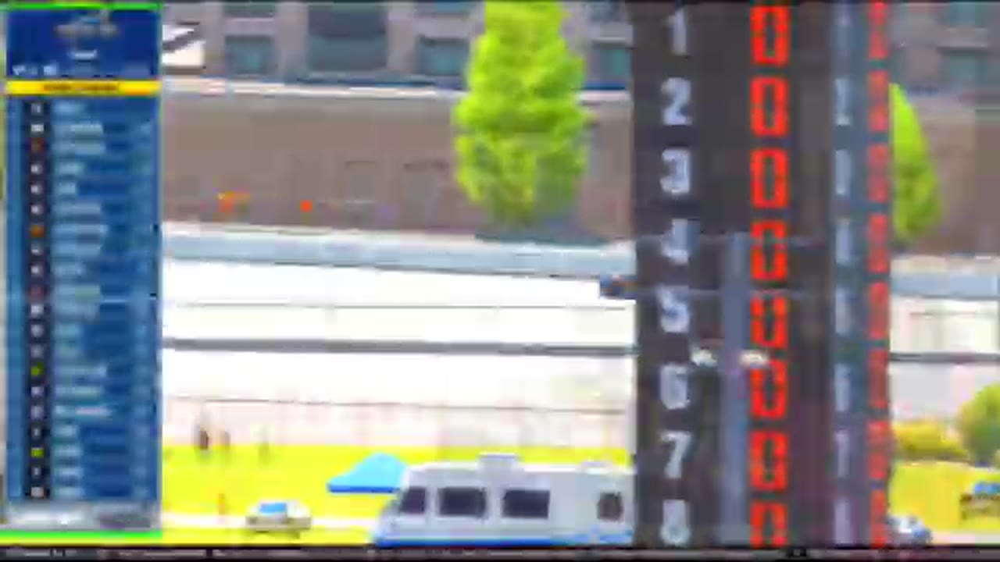

Papowell Takes Dover
Trevor Haley and Nick Bowman divided the stages, but Connor Papowell passed into the lead and headed a completely new podium.

Connor Papowell took Dover from Trevor Haley after the final restart sequence put the No. 12 into the wall. Papowell moved to the lead, held Tommy Ryan through the white flag, and reached the checkered with Grant Wesley third. The completely new podium arrived after Haley and Nick Bowman had divided the stages, another Season 1 result in which Darkhorse owned the checkpoints but a different driver solved the last run.
The Monster Mile announced its difficulty with a Turn 4 pileup during the opening run. Once the field settled, Haley took Stage 1 and Bowman answered in Stage 2. Their results continued Darkhorse’s point-scoring depth, but the incidents and stop cycles prevented either driver from turning the stages into permanent control.
Bowman’s race changed sharply when he ran out of fuel entering pit road. The loss removed the Stage 2 winner from the cleanest version of the strategy cycle and forced him to recover through traffic. He and Haley later brought Dover back to green, but one teammate was now rebuilding while the other had become the clearest route to the feature.
Tommy Ryan entered the next pit-strategy swing and began positioning himself as the principal challenger. The lead changed hands during the closing phase. When Kyle Cameron brushed the wall, the resulting traffic brought Ryan back toward Haley, reducing the gap and setting up another confrontation between the leader and the driver who would eventually finish second.
A caution replay involving Bowman interrupted the sequence again. Every reset made the narrow Dover lane more important because clean air and corner entry could be defended for only a few laps at a time. Haley remained the visible benchmark, but Papowell had moved close enough that one error or wall contact could reverse the race.
Papowell’s opportunity was built through proximity rather than early control. Haley and Bowman had divided the formal points, Ryan had used strategy to keep returning to the lead fight, and Wesley remained within reach of the front. Papowell’s task was to stay close enough that Dover’s wall—always one corner away from changing a run—could turn another driver’s lost momentum into his own clean lane. By the final reset, he no longer needed the whole race to come back to him; he needed one opening.
Ryan and Wesley gave that opening consequence. If Papowell hesitated after Haley’s contact, Ryan was positioned to take the same lead, and Wesley was close enough to turn a second mistake into a lost podium. The final restart therefore asked Papowell to complete two jobs in quick succession: clear the damaged route of the No. 12, then defend against cars that had not hit the wall. The win would be decided by how quickly he converted disruption into control.
That reversal came during the final restart sequence. Haley hit the wall and lost the preferred route. The tape supports the contact and the competitive consequence without establishing intent or a complete list of positions lost. Papowell passed into the lead, and Ryan became the immediate threat as the race approached its final lap.
Papowell took the white flag in control and held Ryan to the stripe. Wesley completed the supported podium. The result read therefore introduced three drivers to the Season 1 top-three ledger in one event: Papowell first, Ryan second, Wesley third. The complete order behind them remains unresolved, but the podium does not.
The winner’s surname follows the clearest repeated HLRN rendering and remains marked for owner certification. That editorial caution applies to spelling, not to competitive identity. The driver attached to the broadcast’s winning car, checkered call, and post-race segment is the accepted Dover winner. Central keeps the spelling cell open without pretending the race result itself is uncertain.
The completely new podium gives Dover a consequence beyond Papowell’s individual breakthrough. Ryan’s strategy became a runner-up finish, Wesley converted late availability into third, and the Darkhorse stage scorers were displaced from all three supported positions. That contrast is the race’s full competitive swing. It began with the familiar team collecting points, passed through Bowman’s fuel failure and Haley’s wall contact, and ended with three different drivers receiving the positions that define the feature record. Dover rewarded the three cars that best converted the last reset, not the two that had banked the earlier stages. The final order records a complete transfer of control from the checkpoint leaders to the closing trio.
Dover’s final story belongs to the difference between control and conversion. Haley and Bowman collected the stage results; Bowman’s fuel problem changed his route; Ryan’s strategy kept him close; Haley’s wall contact opened the lead. Papowell was the driver who converted that opening into the checkered flag. In a season crowded with late transformations, Dover delivered one of the clearest: a new line after the restart, a new leader, and an entirely new podium.
Receipts behind the report
These links open the exact HLRN source windows used by the editorial file.
- OPENING · STAGE
Haley extends the stage-point reign
Trevor Haley controls Stage 1 at Dover while the points fight tightens.
▶ 2:06 SOURCE WINDOW - MIDDLE · STAGE
Bowman takes Stage 2
Nick Bowman brings the No. 88 through the second stage for Darkhorse.
▶ 3:41 SOURCE WINDOW - CLOSING · PASS
Papowell takes the lead when Haley hits the wall
Haley's wall contact opens the outside lane, and Connor Papowell moves to the front.
▶ 4:39 SOURCE WINDOW - CLOSING · RESULT
Three newcomers own the Dover podium
HLRN records Papowell first, Tommy Ryan second, and Grant Wesley third.
▶ 5:41 SOURCE WINDOW
The top three are position-supported. Connor Papowell's surname is provisional pending owner review.